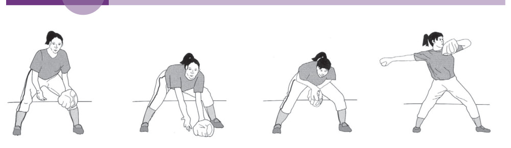
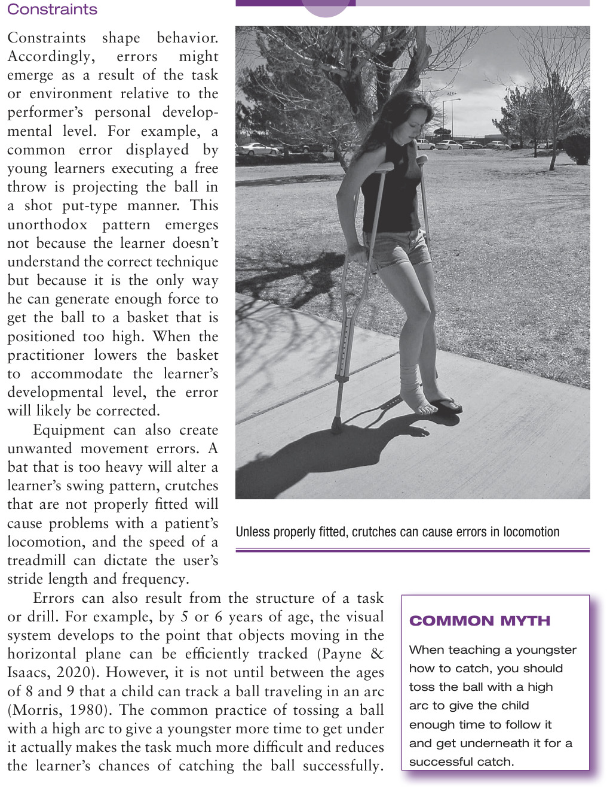
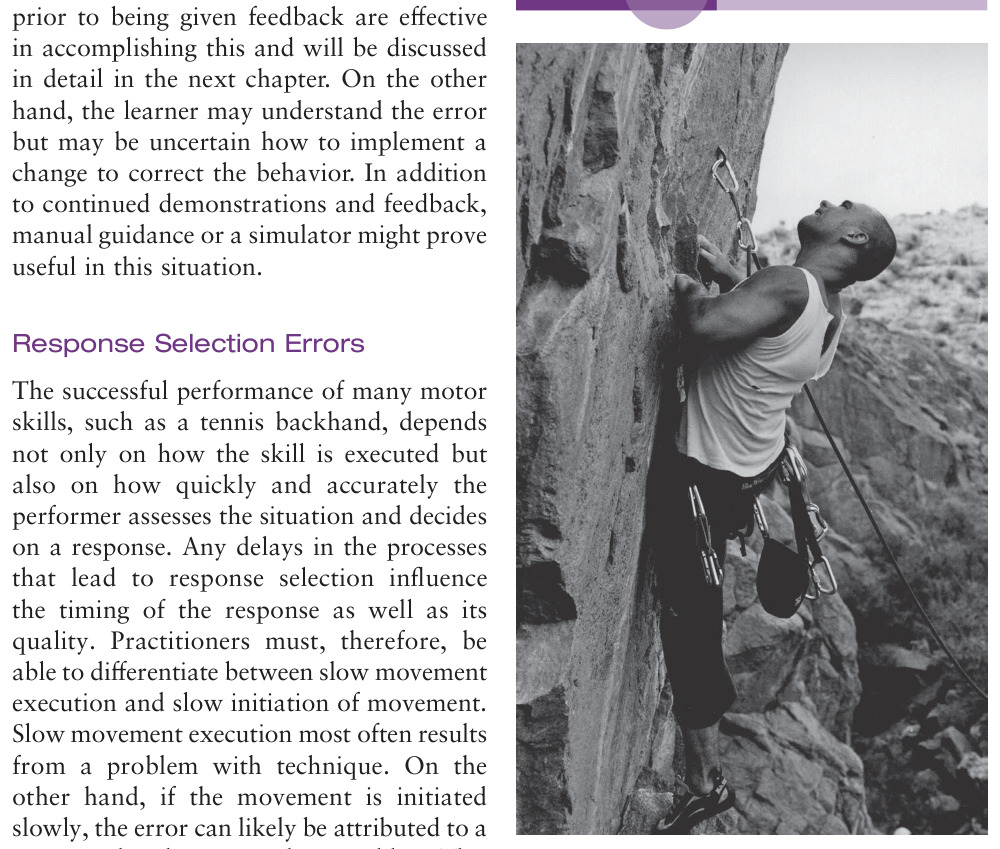
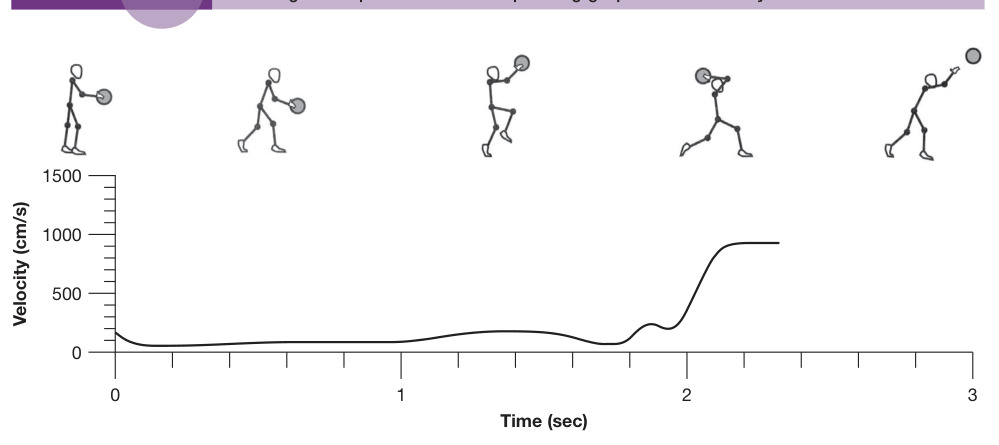
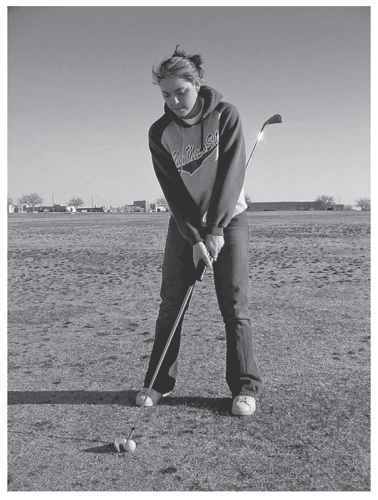

Chương 11 — Chẩn Đoán Lỗi
Sally cảm thấy bực bội. Cô đã dành hàng giờ đồng hồ với huấn luyện viên tennis của mình để luyện cú đánh trái tay (backhand). Kỹ thuật của cô hoàn hảo, nhưng trong thi đấu cô luôn chạm bóng quá muộn. Huấn luyện viên bảo cô rằng kỹ thuật trông rất tốt và cô chỉ cần vung vợt nhanh hơn. Thế nhưng, dù cô có cố gắng đến đâu, cô vẫn không thể khắc phục được vấn đề. Cô không biết còn phải làm gì khác, và huấn luyện viên cũng chưa đưa ra gợi ý nào khác.
PHÂN TÍCH KỸ NĂNG
Người thực hành phải cung cấp cho người học thông tin về mức độ đúng đắn của thực hiện của họ và đề ra những điều chỉnh nhằm cải thiện. Tuy nhiên, trước khi có thể cung cấp thông tin này, người thực hành phải có khả năng phân tích chính xác thực hiện và xác định không chỉ là có tồn tại lỗi hay không, mà còn là nguyên nhân của lỗi đó và cách khắc phục. Quá trình này được mô tả ở nửa sau của mô hình tích hợp đã được giới thiệu trong Chương 1. Để xác định tính đúng đắn của một đáp án, cách tiếp cận phổ biến nhất là đơn giản là quan sát thực hiện. Với hình thức đánh giá này, người thực hành thường so sánh kỹ thuật của người học với kỹ thuật điển hình của một cá nhân có trình độ điêu luyện. Thật không may, ba hạn chế tiềm ẩn vốn cố hữu trong cách tiếp cận này.
Thứ nhất, dù việc cố sao chép hay áp dụng kỹ thuật của một vận động viên vô địch có thể là tự nhiên, thì kỹ thuật đó không nhất thiết phù hợp nhất với mọi người học. Kết quả mong muốn cũng có thể đạt được thông qua các biến thể của một kỹ thuật cụ thể, và việc vận động viên hình thành những nét riêng của mình là điều không hiếm gặp. Do đó, người thực hành phải phát triển sự hiểu biết thấu đáo về cơ sinh học (biomechanics) để xác định các thành phần cơ bản của kỹ thuật đúng. Bên cạnh đó, người học có thể không chia sẻ cùng năng lực và thuộc tính nền tảng với vận động viên mà họ đang cố noi theo. Hệ quả là, một số kỹ thuật có thể trở nên không phù hợp vì khác biệt cá nhân.
Hạn chế thứ hai là khuyết điểm được quan sát thấy không nhất thiết phản ánh đúng nguyên nhân tiềm ẩn của lỗi. Ví dụ, một người thực hành có thể thấy một cầu thủ bóng chuyền đánh bóng vào lưới khi phát bóng và muốn sửa cú vung tay hoặc lượng lực tạo ra. Tuy nhiên, nếu cầu thủ ném bóng quá xa về phía trước so với cánh tay đánh, điều đó cũng sẽ khiến cô đánh bóng với góc quá thấp để vượt qua lưới. Trong tình huống này, cần sửa cú ném bóng (toss), chứ không phải cú vung tay. Tương tự, một cầu thủ đánh bóng chày thuận tay phải có thể liên tục đánh bóng lệch sang phải. Một cách giải thích cho lỗi này là tốc độ vung chậm do vận động viên đưa gậy ra khỏi vai và thực hiện cú vung dài, vét rộng. Tuy nhiên, khả năng thứ hai là vận động viên gặp khó khăn trong việc nhận diện cú ném và chậm bắt đầu cú vung của mình.
Ví dụ về cú đánh trong đoạn trước gợi ra hạn chế thứ ba và là trọng tâm của chương này: Các lỗi không phải lúc nào cũng là kết quả của kỹ thuật kém. Nhiều lỗi có thể quy cho những khiếm khuyết trong lĩnh vực học vận động. Tuy nhiên, vì chúng ta chỉ thấy đầu ra của thực hiện của người học, nên người thực hành có xu hướng tập trung vào kết quả của vận động và chỉ cung cấp phản hồi về những khía cạnh kỹ thuật có thể quan sát được của kỹ năng (Rothstein, 1986). Hệ quả là, các quá trình nền tảng dẫn đến thực hiện thường bị bỏ qua,
vì chúng không thể quan sát trực tiếp. Mục đích của chương này là xác định những lỗi tiềm ẩn có thể biểu hiện không phải do kỹ thuật kém, mà do các vấn đề liên quan đến học vận động và kiểm soát vận động.
LẬP KẾ HOẠCH QUAN SÁT
Phân tích kỹ năng chính xác bắt đầu từ kỹ năng quan sát tốt. Sau cùng, bạn không thể sửa một lỗi nếu trước tiên không phát hiện được nó và xác định nguyên nhân của nó. Kỹ năng quan sát và phân tích không đến một cách tự nhiên với hầu hết người thực hành vận động con người; tuy nhiên, với luyện tập và sự hiểu biết về cách tiến hành quan sát có hệ thống, bất kỳ người thực hành nào cũng có thể phát triển các kỹ năng này. Hãy thử kiểm tra kỹ năng quan sát của bạn trong Hoạt động Khám phá 11.1.
Khác với những bức ảnh tĩnh được trình bày trong Hoạt động Khám phá, vận động con người diễn ra vừa năng động vừa nhanh, nên người quan sát chỉ có một phần nhỏ của giây để đánh giá một lần thực hiện. Vì vậy, quan sát tốt bắt đầu bằng một kế hoạch (Hall, 2019).
Xác Định Mục Đích Và Các Yếu Tố Then Chốt Của Kỹ Năng
Trước khi tiến hành quan sát, người thực hành nên xác định cả mục đích của kỹ năng được quan sát lẫn các yếu tố then chốt của nó. Các yếu tố then chốt, còn gọi là đặc điểm quan trọng, là những chuyển động cụ thể của cơ thể có thể quan sát được và ảnh hưởng đến thực hiện của kỹ năng (xem Hình 11.1 để có ví dụ). Việc xác định chúng đòi hỏi sự hiểu biết thấu đáo cả về bản thân kỹ năng lẫn cơ sinh học. Nhiều sách giáo khoa, sách chuyên biệt, trang web và tạp chí, cũng như các người thực hành vận động khác, có thể hỗ trợ. Khi các yếu tố then chốt của kỹ năng đã được xác định, người thực hành có thể quyết định những yếu tố nào sẽ là tiêu điểm của lần quan sát.

Hình 11.1: Các yếu tố then chốt khi bắt một quả bóng lăn trên mặt đất
- Hai chân rộng bằng vai
- Đầu gối cong/thân người thấp
- Trọng lượng dồn vào mu bàn chân
- Găng tay mở để lòng bàn tay hướng lên
- Tay kia nằm trong vùng của găng tay
- Tập trung vào quả bóng
- Vào đúng vị trí ngay phía trước quả bóng
- Hạ người xuống, đầu gối cong, thân sát mặt đất
- Duỗi tay ra, găng mở với lòng bàn tay hướng lên và đặt trên mặt đất phía trước bạn
- Hai tay duỗi thẳng—vươn về phía trước chân để lấy bóng
- Mắt dõi xuống quả bóng
- Nhìn bóng vào trong găng tay
- Khép găng tay lại quanh quả bóng
- Tay kia che lên quả bóng
- Kéo bóng vào sát thân người
- Trong một chuyển động liên tục, đứng dậy và xoay người sang tư thế ném
- Bước về phía mục tiêu và ném bóng
HOẠT ĐỘNG KHÁM PHÁ 11.1 — Chẩn Đoán Lỗi
Thiết bị:
- Đồng hồ bấm giờ hoặc đồng hồ điện tử
- Một người bạn cùng học
Quy trình: Có ba điểm khác biệt giữa hai bức tranh. Hãy bấm giờ xem bạn mất bao lâu để tìm ra chúng. Sau đó, hãy bấm giờ một người đang thực hiện cú nhảy thẳng đứng (vertical jump). Hãy chú ý ghi lại thời gian cần thiết để hoàn thành từng nhiệm vụ.
Câu hỏi:
- Sự khác biệt về thời gian giữa việc bạn tìm ra ba điểm sai trong sơ đồ và việc thực hiện cú nhảy thẳng đứng là bao nhiêu?
- Hãy liệt kê những khác biệt khi quan sát một bức tranh tĩnh so với một chuyển động năng động trong việc phát hiện các khuyết điểm của thực hiện.
Xác Định Góc Nhìn Quan Sát
Bước thứ hai trong việc xây dựng kế hoạch quan sát là xác định góc nhìn tối ưu để quan sát kỹ năng và, cụ thể hơn, các yếu tố then chốt đã được chọn làm tiêu điểm.
Để nhìn thấy mọi khía cạnh quan trọng của kỹ năng, có thể cần phải quan sát kỹ năng từ một số vị trí khác nhau. Bên cạnh đó, khoảng cách mà người thực hành quan sát sẽ thay đổi tùy theo tiêu điểm của lần quan sát. Ví dụ, để tập trung vào toàn bộ chuyển động, người quan sát cần đứng xa người học hơn; nếu người thực hành cần quan sát chuyển động mắt của người thực hiện để xác định tiêu điểm thị giác của vận động viên hướng về đâu, thì có thể cần một góc nhìn cận cảnh. Người quan sát nên chọn một vị trí cho phép nhìn rõ mà không bị phân tâm.
Quyết Định Số Lần Quan Sát
Cần quan sát bao nhiêu lần thử trước khi đưa ra phán đoán về chất lượng của thực hiện? Không có một con số cụ thể nào, nhưng không nên phân tích dựa trên một lần thực hiện duy nhất. Những người thực hành có kinh nghiệm quan sát hạn chế sẽ cần xem thêm nhiều lần thử để xác định nguyên nhân tiềm ẩn của một lỗi. Ngoài ra, khi độ phức tạp của nhiệm vụ tăng lên, số lần quan sát cần thiết để đánh giá chính xác thực hiện cũng tăng theo. Cuối cùng, như đã lưu ý trước đó, một đặc điểm của người mới học là sự không nhất quán trong thực hiện. Do đó, việc xác định lỗi ổn định và/hoặc lỗi then chốt có thể đòi hỏi phải quan sát nhiều lần.
Cân Nhắc Sử Dụng Video
Quyết định cuối cùng là có ghi lại thực hiện bằng video hay không. Video hữu ích vì nó cho phép cả người thực hành lẫn người học xem lại nhiều lần; có thể làm chậm, tạm dừng và tua từng khung hình; và nó ghi lại những chuyển động diễn ra quá nhanh (dưới một phần tư giây) để mắt người có thể thấy (Hall, 2019). Tuy nhiên, video cũng có một số nhược điểm. Những người học không quen bị quay phim có thể thấy ngại ngùng hoặc tự ti và thay đổi thực hiện của họ. Ngoài ra, việc xem lại có thể khó nhìn trên máy quay video kỹ thuật số hoặc thậm chí trên điện thoại thông minh vì kích thước màn hình.
XÁC ĐỊNH NGUYÊN NHÂN CỦA LỖI VÀ CÁCH KHẮC PHỤC
Khi người thực hành đã quan sát thực hiện và phát hiện sự tồn tại của một hoặc nhiều lỗi vận động, họ phải xác định nguyên nhân tiềm ẩn của các lỗi đó. Người thực hành nên bắt đầu bằng cách hỏi tại sao một hành vi nhất định lại được quan sát thấy. Tại sao cú đánh trái tay lại muộn? Tại sao bệnh nhân lại mất thăng bằng? Hãy nhớ rằng, như đã lưu ý ở phần trước, câu trả lời có thể không liên quan đến kỹ thuật. Ví dụ, mệt mỏi, dự đoán sai vị trí của đồng đội, hoặc một lỗi kỹ thuật đều có thể là nguyên nhân khả dĩ của một đường chuyền lệch đích trong bóng đá. Vì chiến lược can thiệp phù hợp sẽ khác nhau cho mỗi khả năng, nên việc xác định đúng nguyên nhân thực sự của lỗi là then chốt đối với quá trình nâng cao thực hiện. Do đó, người thực hành phải nhận biết về nhiều nguồn gốc tiềm ẩn của lỗi nhằm bảo đảm rằng các điều chỉnh được đưa ra vừa chính xác
CEREBRAL CHALLENGE 11.1 — Thử Thách Trí Não
Đối với một kỹ năng bạn chọn, hãy liệt kê các yếu tố then chốt và xác định góc nhìn tối ưu để quan sát từng yếu tố.
Yếu tố then chốt:
Kế hoạch quan sát:
và hiệu quả. Các nguồn gốc gây lỗi có thể được xếp vào năm nhóm lớn, như mô tả trong Hình 11.2: (1) lỗi do ràng buộc cá nhân, nhiệm vụ hoặc môi trường, (2) lỗi hiểu, (3) lỗi chọn đáp án, (4) lỗi thực hiện, và (5) lỗi cảm giác.

Hình 11.2: Các nguyên nhân có thể gây lỗi liên quan đến học vận động và kiểm soát vận động
- Nguyên nhân gây lỗi
- Lỗi do ràng buộc
- Cá nhân
- Nhiệm vụ
- Môi trường
- Lỗi hiểu
- Lỗi chọn đáp án
- Lỗi nhận thức
- Lỗi ra quyết định
- Lỗi nhớ lại
- Lỗi thực hiện
- Lỗi phối hợp thần kinh cơ
- Đánh đổi tốc độ–độ chính xác
- Tiết lộ ý định
- Lỗi cảm giác
- Thị giác
- Cảm giác tự thân
Lỗi Do Ràng Buộc Cá Nhân, Nhiệm Vụ Hoặc Môi Trường
Ràng buộc định hình hành vi. Theo đó, lỗi có thể phát sinh như hệ quả của nhiệm vụ hoặc môi trường so với mức độ phát triển cá nhân của người thực hiện. Ví dụ, một lỗi phổ biến mà người học nhỏ tuổi mắc phải khi thực hiện cú ném phạt (free throw) là đẩy bóng theo kiểu ném tạ (shot put). Kiểu chuyển động không chính thống này xuất hiện không phải vì người học không hiểu kỹ thuật đúng, mà vì đó là cách duy nhất họ có thể tạo đủ lực để đưa bóng vào rổ được đặt quá cao. Khi người thực hành hạ rổ xuống để phù hợp với mức độ phát triển của người học, lỗi đó nhiều khả năng sẽ được khắc phục.
Thiết bị cũng có thể tạo ra các lỗi vận động không mong muốn. Một cây gậy quá nặng sẽ làm thay đổi kiểu vung của người học; nạng (crutches) được điều chỉnh không phù hợp sẽ gây vấn đề cho việc di chuyển (locomotion) của bệnh nhân; và tốc độ của máy chạy bộ có thể quyết định độ dài và tần số bước chân của người dùng.

Hình 11.3: Nếu không được điều chỉnh phù hợp, nạng có thể gây lỗi trong di chuyển
Lỗi cũng có thể phát sinh từ cấu trúc của một nhiệm vụ hoặc bài tập. Ví dụ, ở độ tuổi 5 hoặc 6, hệ thống thị giác phát triển đến mức có thể theo dõi hiệu quả các vật thể chuyển động trong mặt phẳng ngang (Payne & Isaacs, 2020). Tuy nhiên, phải đến giữa độ tuổi 8 và 9, trẻ mới có thể theo dõi một quả bóng bay theo đường cong (Morris, 1980). Việc thường xuyên ném bóng với quỹ đạo cong cao để cho trẻ có thêm thời gian chạy vào vị trí dưới bóng thực chất lại làm nhiệm vụ khó hơn nhiều và giảm cơ hội bắt bóng thành công của người học.
QUAN NIỆM SAI PHỔ BIẾN
Khi dạy trẻ cách bắt bóng, bạn nên ném bóng với quỹ đạo cong cao để cho trẻ có đủ thời gian theo dõi và chạy vào vị trí bên dưới quả bóng nhằm bắt thành công.
Thay vào đó, nên ném bóng thẳng về phía trẻ để phù hợp với sự phát triển thị giác của trẻ, cho đến khi người học được khoảng 8 hoặc 9 tuổi. Những lỗi khác sẽ phát sinh khi môi trường thay đổi từ môi trường đóng, chẳng hạn đánh bóng trên giá đặt sẵn (tee), sang môi trường mở hơn, chẳng hạn đánh một cú ném tới. Người thực hành nên kỳ vọng thấy thực hiện suy giảm khi người học thích nghi với những yêu cầu mới đặt ra cho họ. Tuy nhiên, sự lặp lại kéo dài của lỗi mà không có dấu hiệu thích nghi có thể cho thấy yêu cầu của nhiệm vụ mới đang vượt quá năng lực hiện tại của người học. Trong những trường hợp như vậy, người thực hành có thể phải quay lại cho người học luyện tập kỹ năng trong một môi trường đóng hơn trong một khoảng thời gian.
CEREBRAL CHALLENGE 11.2 — Thử Thách Trí Não
Hãy liệt kê những lỗi vận động có thể xảy ra trong thể thao hoặc phục hồi chức năng do kích thước thiết bị, vật thể hoặc dụng cụ không phù hợp.
Sợ hãi cũng có thể là nguồn gốc gây lỗi. Người mới học bơi thường sợ nước. Nỗi sợ bóng có thể trúng mình đóng vai trò trong việc bắt và đánh bóng. Nỗi sợ độ cao hoặc sợ ngã phải được khắc phục trước khi người học có thể thực hiện đúng động tác dây leo (rappel), nhảy trượt tuyết (ski jump) hoặc leo núi đá. Hơn nữa, người thực hiện có thể thay đổi kỹ thuật nếu họ sợ tái chấn thương một chi bị thương vừa được phục hồi. Cuối cùng, một dạng sợ hãi khác — nỗi sợ thất bại — có thể có tác động tiêu cực đến thực hiện. Để đối phó với nỗi sợ này, người thực hành nên đưa vào việc đặt mục tiêu, tạo cơ hội cho mọi người học trải nghiệm thành công trong luyện tập, và tạo ra một môi trường nơi người học không sợ mắc lỗi.
Lỗi Hiểu
Lỗi hiểu xảy ra khi người học không hiểu các yêu cầu của kỹ năng hoặc những gì được mong đợi. Những lỗi này phát sinh khi người học không hiểu đầy đủ hướng dẫn được đưa ra, có thời gian chú ý ngắn hoặc năng lực chú ý hạn chế, hoặc thiếu động lực. Trong trường hợp này, chỉ cần giải thích lại kỹ năng. Hãy chắc chắn dùng thuật ngữ phù hợp với độ tuổi và trình độ kỹ năng của người học, và tránh quá tải người học với quá nhiều thông tin. Cuối cùng, hãy kiểm tra sự hiểu biết.
Lỗi hiểu cũng có thể xảy ra khi người học đang cố sửa và tinh chỉnh kỹ năng của mình. Dù người thực hành có thể đã cho người học nhận biết về sự tồn tại của vấn đề, người học vẫn có thể không hiểu đầy đủ lỗi là gì hoặc nó được tạo ra như thế nào. Một chiến lược hữu ích trong tình huống này là quay lại thực hiện và cho người học xem họ đang làm sai điều gì. Bên cạnh đó, người học phải được hướng dẫn chú ý đến các hệ quả cảm giác của chuyển động mình nhằm phát triển khả năng phát hiện và điều chỉnh lỗi.
Các chiến lược đặt câu hỏi khuyến khích người học tự đánh giá thực hiện của mình trước khi nhận phản hồi có hiệu quả trong việc đạt được điều này và sẽ được thảo luận chi tiết ở chương sau. Mặt khác, người học có thể hiểu lỗi nhưng lại không chắc cách thực hiện một thay đổi để điều chỉnh hành vi. Ngoài việc tiếp tục trình diễn mẫu và phản hồi, hướng dẫn bằng tay hoặc một mô phỏng (simulator) có thể hữu ích trong tình huống này.

Hình 11.4: Nỗi sợ ngã có thể cản trở thực hiện của một người leo núi
Lỗi Chọn Đáp Án
Thực hiện thành công của nhiều kỹ năng vận động, chẳng hạn cú đánh trái tay trong tennis, không chỉ phụ thuộc vào cách kỹ năng được thực hiện, mà còn vào cách người thực hiện nhanh chóng và chính xác đánh giá tình huống và quyết định một đáp án. Bất kỳ sự chậm trễ nào trong các quá trình dẫn đến lựa chọn đáp án đều ảnh hưởng đến thời điểm của đáp án cũng như chất lượng của nó. Do đó, người thực hành phải có khả năng phân biệt giữa thực hiện chuyển động chậm và khởi động chuyển động chậm. Thực hiện chuyển động chậm thường nhất là kết quả của vấn đề kỹ thuật. Mặt khác, nếu chuyển động được khởi động chậm, lỗi nhiều khả năng quy cho một vấn đề nhận thức hoặc ra quyết định. Sự phân biệt này, nếu được cân nhắc, đã có thể giúp huấn luyện viên của Sally chẩn đoán nguyên nhân của lỗi đánh trái tay. Vì kỹ thuật của cô đúng và việc tăng tốc toàn bộ chuyển động không hiệu quả, bước tiếp theo lẽ ra là xem xét các chiến lược chọn đáp án của Sally.
Lỗi Nhận Thức
Trừ khi người học có thể nhanh chóng và chính xác phân biệt cái gì liên quan đến nhiệm vụ trong số vô số kích thích hiện diện trong môi trường, việc lựa chọn đáp án sẽ bị chậm trễ hoặc sai. Các lỗi vận động thường phát sinh khi người học không biết tìm manh mối nào trong môi trường, không phân biệt được giữa kích thích liên quan và không liên quan đến nhiệm vụ, hoặc tập trung chú ý vào sai manh mối. Ví dụ, một cầu thủ bóng rổ tập trung vào chuyển động đầu của đối thủ thay vì vùng giữa thân sẽ dễ bị lừa bởi một cú giả (fake).
Trong một số trường hợp, người học có thể hiểu manh mối nào là liên quan nhưng lại không nhìn vào những vùng giàu thông tin trong môi trường nơi các manh mối đó xuất hiện (Magill, 1998; Rothstein, 1986). Điều này cũng cản trở khả năng ra quyết định của người học.
Để xác định liệu bất kỳ nguyên nhân nào trong số này có phải là nguồn gốc của lỗi thời điểm của Sally hay không, huấn luyện viên của cô phải xác định được Sally có đọc đúng các tình huống thi đấu hay không. Thứ nhất, Sally có biết cần tìm manh mối then chốt nào không? Thứ hai, cô có phát hiện được thông tin đó trong khi thi đấu không? Nếu không, các chiến lược can thiệp sẽ tập trung vào những điều sau:
- Dạy các manh mối then chốt.
- Nhắc Sally chuẩn bị đáp án sớm hơn (ví dụ, bắt đầu chuẩn bị ngay khi bóng rời vợt đối thủ và đưa vợt về vị trí vung ngược (backswing) trước khi bóng chạm đất).
- Hướng sự chú ý của cô đến nơi các manh mối xuất hiện trong môi trường.
- Cung cấp nhiều cơ hội luyện tập trong nhiều tình huống khác nhau có chứa các manh mối phổ biến liên quan đến nhiệm vụ.
Mức độ hưng phấn (arousal) cũng có thể dẫn đến lỗi nhận thức, vì nó ảnh hưởng đến độ thành thạo trong đánh giá của người học. Như đã lưu ý trong Chương 3, khi mức độ hưng phấn quá thấp, tiêu điểm chú ý trở nên quá rộng; người học khi đó không thể chỉ tập trung vào các manh mối liên quan đến nhiệm vụ. Mặt khác, khi mức độ hưng phấn tăng đến mức người học trở nên quá hưng phấn, tiêu điểm chú ý trở nên hẹp đến mức người học có thể không còn khả năng quét môi trường hiệu quả, khiến các kích thích có ý nghĩa tiềm ẩn không được phát hiện. Cả hai tình huống đều có thể dẫn đến đáp án không chính xác, vì người thực hiện thiếu thông tin cần thiết để ra quyết định phù hợp.
CEREBRAL CHALLENGE 11.3 — Thử Thách Trí Não
Bạn đang dạy cầu lông cho một lớp giáo dục thể chất lớp bảy. Bạn đã cùng các em luyện cú phát bóng dài và nhận thấy nhiều em gặp khó khăn trong việc đánh cầu sau khi thả cầu. Hãy liệt kê những lý do có thể khiến các em đánh trượt cầu và đưa ra gợi ý để khắc phục vấn đề.
Lỗi Ra Quyết Định
Nhiều lỗi phát sinh từ vấn đề ra quyết định. Một người học đánh giá sai vận tốc, hướng, độ cao, trọng lượng, khoảng cách, quỹ đạo của một vật thể, hoặc vị trí của đối thủ hay đồng đội, có thể chọn sai đáp án hoặc chọn đúng chuyển động nhưng áp dụng sai thông số điều khiển cho tình huống. Việc chú ý đến các kích thích không liên quan đến nhiệm vụ, chẳng hạn bị lừa bởi một cú giả đầu, cũng có thể gây chậm trễ tạm thời trong việc đáp án. Hơn nữa,
dự đoán sai thời điểm một vật thể, một người hoặc một tín hiệu âm nhạc xuất hiện có thể khiến người học khởi động chuyển động sai thời điểm và đáp án quá sớm hoặc quá muộn. Một lần nữa, những lỗi ra quyết định này có thể được khắc phục bằng cách tăng khả năng của người thực hiện trong việc xác định và định vị các manh mối then chốt, và bằng cách giúp người thực hiện phát triển mối quan hệ nhân–quả chặt chẽ hơn giữa một manh mối cụ thể và đáp án phù hợp.
Chậm trễ đáp án có thể xảy ra nếu người học không giảm được số lựa chọn đáp án. Theo Định luật Hick (Hick's Law), mức độ bất định càng cao trong một tình huống thì người học càng mất nhiều thời gian để quyết định nên đáp án nào. Nhiều vấn đề ra quyết định có thể được giải quyết bằng cách giảm số lựa chọn đáp án có thể có. Người học nên được hướng dẫn cách tìm một cách có hệ thống các đặc điểm thực hiện then chốt trong một tình huống nhất định, như một tiền vệ (quarterback) làm trong một pha tấn công theo lựa chọn (option play). Tăng khả năng của người học trong việc nhận diện các yếu tố dự báo tiềm ẩn, chẳng hạn xu hướng của đối thủ hoặc của tình huống, cũng giúp giảm bất định. Ví dụ, nếu Sally biết rằng bất cứ khi nào đối thủ gặp khó khăn trong thi đấu, cô ấy sẽ đánh bóng vào cú trái tay của Sally, thì Sally có thể chuẩn bị tốt hơn cho cú đánh sắp tới.
CEREBRAL CHALLENGE 11.4 — Thử Thách Trí Não
Trong suốt một buổi tổng dượt, một vũ công liên tục không khớp nhịp với phần còn lại của đoàn. Hãy đề xuất những lý do có thể gây ra tình trạng này và đưa ra gợi ý để khắc phục vấn đề.
CEREBRAL CHALLENGE 11.5 — Thử Thách Trí Não
Một vận động viên liên tục bị vượt qua khi chơi phòng thủ cá nhân. Bạn sẽ nhìn vào những gì để xác định lý do người học này không thể bám sát nhiệm vụ được giao? Bạn có thể đưa ra khuyến nghị gì để khắc phục vấn đề?
Lỗi Nhớ Lại
Người học thường gặp khó khăn trong việc nhớ các chuyển động và chiến lược vì khoảng cách thời gian giữa các buổi luyện tập. Một số người học thậm chí còn quên ngay những gì người hướng dẫn vừa bảo họ thử đưa vào lần thử tiếp theo.
Đôi khi, người học không thể nhớ lại cần làm gì trong một tình huống nhất định. Ví dụ, trong bóng đá, người học nhỏ tuổi được dạy chơi đúng vị trí của mình, nhưng trong sự phấn khích của trận đấu, nhiều em quên vị trí và chạy theo bóng. Thường thì người học có khả năng thực hiện đúng chuyển động nhưng
chỉ đơn giản là quên làm nó vào thời điểm thích hợp. Nhắc nhở cùng các chiến lược đặt câu hỏi tập trung chú ý, chẳng hạn “Lần này con sẽ tập trung vào gì?”, thường là đủ để khắc phục các lỗi do quên.
Lỗi Thực Hiện
Đôi khi người học chọn đúng đáp án cho một tình huống nhưng không thể thực hiện đáp án đó một cách chính xác. Ví dụ, một cầu thủ racquetball có thể chọn đúng cú đánh kết thúc (kill shot) trong một tình huống nhất định nhưng lại đánh hư bóng. Các lỗi thực hiện xảy ra vì nhiều lý do, bao gồm luyện tập chưa đủ và thực hiện chuyển động quá nhanh.
Lỗi Phối Hợp Thần Kinh Cơ
Người thực hành phải có khả năng phân biệt giữa điều người học có thể làm và điều họ biết (Christina & Corcos, 1988). Thường thì lỗi vận động xảy ra không phải vì thiếu hiểu biết, mà vì người học chưa có đủ thời gian luyện tập để thiết lập sự phối hợp thần kinh cơ phù hợp (Wang & Griffin, 1998). Trong những trường hợp như vậy, lỗi nhiều khả năng sẽ được khắc phục khi có thêm cơ hội luyện tập. Tuy nhiên, trong một số trường hợp, người học không có năng lực nền tảng cần thiết để phát triển mức độ thành thạo cao hoặc thiếu các điều kiện thể chất tiên quyết để hoàn thành nhiệm vụ hay một thành phần của nhiệm vụ. Nếu vấn đề bắt nguồn từ một khiếm khuyết thể chất, chẳng hạn mức sức mạnh không đủ hay tầm vận động kém, thì trước tiên phải giải quyết khiếm khuyết đó. Nói cách khác, người học sẽ phải cải thiện sức mạnh hoặc tầm vận động trước khi có thể thực hiện đúng kỹ năng. Nếu vấn đề bắt nguồn từ một phẩm chất thể chất do di truyền quyết định, thì luyện tập thêm sẽ không mang lại lời giải.
Vấn đề phối hợp thần kinh cơ sẽ phát sinh khi người học cố thay thế một kiểu chuyển động đã hình thành bằng một kiểu mới. Trong suốt quá trình này, chuyển giao tiêu cực sẽ xảy ra, theo đó kiểu đã học trước đó cản trở việc tiếp thu chuyển động mới. Lỗi sẽ phát sinh không phải vì thiếu hiểu biết hay năng lực, mà vì chuyển giao tiêu cực phải được khắc phục. Điều này, đương nhiên, cần thời gian và luyện tập. Chuyển giao tiêu cực cũng có thể xảy ra giữa hai kỹ năng có bản chất tương tự nhau, chẳng hạn cú vung gậy golf và cú vung gậy bóng chày. Lỗi phối hợp sẽ phát sinh khi một cá nhân có kinh nghiệm ở một kỹ năng cố giải quyết những điểm giống và khác với một kỹ năng khác.
Cuối cùng, sự phối hợp thần kinh cơ có thể bị suy giảm khi người học cố ý chú ý đến các chi tiết của một kỹ năng thường được thực hiện tự động. Việc chú ý đến các thành phần chuyển động vốn được thực hiện tự động làm gián đoạn dòng chảy bình thường của chuyển động. Điều này có thể thấy khi người lần đầu dùng máy chạy bộ được bảo hãy đi bộ như cách họ thường làm. Kiểu dáng đi của họ sẽ thay đổi cho đến khi họ thấy thoải mái với thiết bị và không còn nghĩ về cách họ đi bộ bình thường nữa.
Đánh Đổi Tốc Độ–Độ Chính Xác
Kết quả thực hiện có thể bị ảnh hưởng bởi sự đánh đổi giữa tốc độ và độ chính xác (speed–accuracy tradeoff). Ví dụ, nếu cú ném kiểu cối xay gió (windmill pitch) được thực hiện quá nhanh, cầu thủ ném sẽ mất độ chính xác và gặp khó khăn đưa bóng vào vùng strike. Tương tự, các kiểu chuyển động sẽ không được thực hiện chính xác nếu bệnh nhân thực hiện bài tập phục hồi quá nhanh. Chỉ bằng cách làm chậm lại việc thực hiện chuyển động, người học có thể khắc phục lỗi.
Tuy nhiên, trong những trường hợp liên quan đến độ chính xác về thời gian, việc tăng tốc chuyển động lại có thể giảm lỗi. Trong tình huống mở đầu chương, lời khuyên của huấn luyện viên Sally là tăng tốc cú vung là tốt, nhưng khi tăng tốc không khắc phục được lỗi thì huấn luyện viên lẽ ra phải tiếp tục tìm kiếm các nguyên nhân tiềm ẩn khác.
CEREBRAL CHALLENGE 11.6 — Thử Thách Trí Não
Hãy liệt kê những tình huống mà người học có thể giành lợi thế bằng cách che giấu một động tác sắp tới. Tiếp theo, hãy liệt kê những cách mà người học có thể vô tình tiết lộ ý định, cho phép đối thủ dự đoán động tác sắp tới.
Tiết Lộ Ý Định
Trong thi đấu, thành công có thể phụ thuộc vào khả năng của người thực hiện giành lợi thế trước đối thủ. Một cách giành lợi thế là tăng mức độ bất định của đối thủ trong tình huống, khiến phản án của đối thủ bị chậm lại. Lợi thế này có thể bị mất nếu đối thủ đoán đúng sự kiện sẽ xảy ra và thời điểm xảy ra. Ví dụ, lý do cú phát bóng của một người học luôn bị trả về dễ dàng có thể là người học đó đang tiết lộ ý định của mình — tức là “báo hiệu” (telegraphing) — cho phép đối thủ chuẩn bị trước. Người học phải được hướng dẫn cách che giấu ý định của mình.
Lỗi Cảm Giác
Lỗi có thể phát sinh từ những hạn chế của các cơ chế cảm giác trong thực hiện vận động. Xét tầm quan trọng của thị giác và cảm giác tự thân cả trong nhận thức lẫn trong phản hồi do đáp án tạo ra, thì sự can thiệp vào đóng góp của chúng có thể cản trở học tập và thực hiện.
Lỗi Thị Giác
Theo Knudson và Kluka (1997), lỗi vận động có thể phát sinh khi yêu cầu thị giác của môn thể thao vượt quá những gì có thể về mặt thể chất. Ví dụ, một người học có thể không thấy các manh mối quan trọng vì cô đang chớp mắt hoặc vì sự kiện diễn ra quá nhanh. Bóng râm có thể gây rối loạn cho hệ thống thị giác
GHI CHÚ NGHIÊN CỨU
Một số nhà nghiên cứu đã đề xuất rằng tồn tại mối quan hệ giữa loại giày dép được mang và dáng đi cùng thăng bằng ở người cao tuổi (Sudarsky, 1990; Wasson et al., 1990). Theo Waked, Robbins và McClaran (1997), mối quan hệ này bắt nguồn từ ảnh hưởng của giày đối với cảm giác tự thân. Mười ba tình nguyện viên nam cao tuổi đã đi trên một thanh thăng bằng (cao 3,9 cm, rộng 7,8 cm, dài 9 m), một lần khiêng chân trần và sau đó sáu lần khi mang giày giống hệt nhau ngoại trừ độ dày và độ cứng của đế giữa. Các thước đo gồm tần suất thất bại thăng bằng, sai số vị trí chân và nhận biết vị trí chân. Kết quả cho thấy (1) độ ổn định và nhận biết vị trí chân có liên quan với nhau, (2) khi đế giữa dày hơn thì sai số vị trí chân cũng tăng, và (3) đế giữa cứng hơn dẫn đến ít sai số vị trí chân hơn. Dựa trên những kết quả này, các nhà nghiên cứu kết luận rằng độ dày và độ cứng của đế giày ảnh hưởng đến nhận biết vị trí chân, từ đó tác động đến độ ổn định. Điều thú vị là người cao tuổi lại có xu hướng thích giày chạy bộ mềm và dày. Do đó, các vấn đề thăng bằng ở người cao tuổi có thể là hệ quả của sở thích chọn giày của họ.
và ảnh hưởng đến thực hiện. Một điểm quan sát không phù hợp có thể che khuất tầm nhìn của người học. Các vật che khuất cũng có thể được sắp đặt có chủ đích, chẳng hạn trong môn khúc côn cầu khi một đồng đội cố chặn tầm nhìn của thủ môn trong lúc một đồng đội khác sút puck.
Lỗi Cảm Giác Tự Thân
Phản hồi cảm giác không chính xác phát sinh từ đau cơ–xương–khớp hoặc chấn thương ở các thụ thể khớp, cơ hoặc da có thể dẫn đến suy giảm phối hợp và kiểm soát trong chuyển động tự nguyện, cũng như phát hiện và điều chỉnh lỗi sai lệch (Hodges, 2007). Một bệnh nhân có khiếm khuyết cảm giác tự thân chẳng hạn, có thể thiếu khả năng kiểm soát khi thực hiện các nhiệm vụ hằng ngày. Trong trường hợp này, thiết bị có thể được điều chỉnh, chẳng hạn mở rộng cán dụng cụ nhà bếp để tăng cảm giác “chạm” và giúp dễ kiểm soát hơn.
Khiếm khuyết cảm giác tự thân cũng có thể gây ra “phản ứng phản xạ bị chậm lại do thời gian cần thiết để đạt đến ngưỡng phát hiện chuyển động tăng lên” (Hodges, 2007, tr. 121). Sự chậm trễ này ảnh hưởng đến thực hiện và cũng có thể làm tăng nguy cơ chấn thương hoặc tái chấn thương, chẳng hạn khi một người chạy bộ địa hình không thể thực hiện liên tục những điều chỉnh nhỏ cần thiết để giữ thăng bằng khi chạy trên mặt đất gồ ghề.
CÓ NÊN SỬA LỖI HAY KHÔNG?
Christina và Corcos (1988) đề xuất rằng khi bản chất của lỗi đã được xác định, người thực hành nên cân nhắc ba câu hỏi trước khi sửa nó. Những câu hỏi này liên quan đến năng lực của người học, thời gian và động lực (xem Hình 11.5).
Chương 11 — Chẩn Đoán Lỗi: Có Nên Sửa Lỗi Hay Không?

Hình 11.5: Các quyết định cần đưa ra để xác định có nên sửa một lỗi hay không
- Người học có đủ năng lực thực hiện điều chỉnh không?
- Cần bao nhiêu thời gian để thực hiện điều chỉnh?
- Người học có động lực thực hiện điều chỉnh không?
Người Học Có Đủ Năng Lực Không?
Câu hỏi đầu tiên cần đặt ra là liệu người học có đủ năng lực thực hiện điều chỉnh hay không. Thực hiện thành công kỹ năng đã được điều chỉnh sẽ phụ thuộc vào việc người học có sở hữu các năng lực nền tảng cần thiết hay không. Bên cạnh đó, nếu người học không có các điều kiện thể chất tiên quyết (mức sức mạnh, tầm vận động, v.v.) và năng lực trí tuệ để thực hiện điều chỉnh, thì việc thay đổi kỹ thuật sẽ không thành công.
Cần Bao Nhiêu Thời Gian?
Câu hỏi thứ hai cần cân nhắc là người học sẽ cần bao nhiêu thời gian để thực hiện điều chỉnh. Điều này phụ thuộc vào loại điều chỉnh cần thiết. Các điều chỉnh có thể được phân loại thành ba nhóm lớn, tóm tắt trong Bảng 11.1: (1) thử lại, (2) tinh chỉnh, hoặc (3) xây lại (Coker, 2005c).
BẢNG 11.1
Danh mục các kiểu điều chỉnh
- Thử lại (Retry): Sửa đổi đơn giản một khuôn mẫu đã hình thành; dễ sửa; cần rất ít hoặc không cần học tập; có thể thay đổi nhanh; ít hoặc không có tác động bất lợi đến thực hiện.
- Tinh chỉnh (Refine): Cải thiện một khuôn mẫu đã hình thành; cần nỗ lực vừa phải để sửa; cần một lượng học tập hợp lý; cần nhiều mức độ thời gian khác nhau; thực hiện giảm sút ban đầu.
- Xây lại (Rebuild): Khuôn mẫu hoàn toàn mới; khó sửa; cần học tập sâu rộng; cần rất nhiều thời gian; tác động tiêu cực đến thực hiện lúc đầu; chuyển giao tiêu cực; gây bực bội.
Trích từ Coker, C. A. (2005c). Correcting faulty mechanics: To fix or not to fix? Strategies, 19(1), 29–31. Được in lại với sự cho phép của Hội Giáo dục Thể chất và Sức khỏe (http://www.shapeamerica.org).
Trong những trường hợp kiểu phối hợp đã đúng và sự thay đổi chỉ đơn giản là điều chỉnh cách thực hiện, người học có thể chỉ cần thử lại kỹ năng. Ví dụ, các lỗi xảy ra do quên có thể dễ dàng được khắc phục bằng nhắc nhở. Tương tự, những thay đổi trong kiểm soát chuyển động, chẳng hạn tăng tốc độ thực hiện, là tương đối dễ áp dụng. Một cầu thủ racquetball có thể chỉ cần vung cổ tay nhanh hơn khi chạm bóng để tăng hiệu quả của cú đánh kết thúc, hoặc một bệnh nhân có thể phải điều chỉnh vị trí đặt gậy khi đi lại. Thông qua gợi ý chú ý, những lỗi này có thể được giải quyết tương đối nhanh và với ít hoặc không có tác động bất lợi đến thực hiện.
Những điều chỉnh khác liên quan đến việc tinh chỉnh một kiểu phối hợp đang hình thành. Ví dụ, một lỗi phổ biến trong kiểu bơi tự do là hạ khuỷu tay trong giai đoạn đưa tay về phía trước (recovery), thường là hệ quả của việc duỗi tay quá mức trước khi đưa tay xuống nước. Để sửa lỗi này, người học phải phát triển thêm kiểu chuyển động hiện có. Thực hiện sẽ có phần không ổn định lúc đầu khi người bơi học cách tinh chỉnh thời điểm và sự phối hợp của kỹ năng. Kiểu điều chỉnh này có thể mất vài tuần, vài tháng, hoặc trong một số trường hợp còn lâu hơn (Melville, 1988).
Những điều chỉnh liên quan đến thay đổi căn bản một kỹ năng đã được học kỹ là tốn thời gian nhất. Người học không chỉ phải quay lại giai đoạn nhận thức của việc học, mà chuyển giao tiêu cực sẽ xảy ra giữa kỹ năng đã học trước đó và kỹ năng được điều chỉnh. Hệ quả là, kiểu phối hợp phải được xây dựng lại, một quá trình đòi hỏi luyện tập đáng kể. Phân tích chi phí–lợi ích có thể cho thấy thời gian dành để học lại một kỹ năng cơ bản là không xứng đáng. Thay vào đó, việc luyện tập các chiến lược, tình huống và/hoặc kỹ năng thi đấu có thể quan trọng hơn và/hoặc hiệu quả hơn về mặt thời gian. Hơn nữa, thời điểm là tất cả. Nếu một điều chỉnh như vậy được thực hiện hai tuần trước một cuộc thi lớn, kết quả có thể thảm hại.
CEREBRAL CHALLENGE 11.7 — Thử Thách Trí Não
a. Hãy xác định và liệt kê năm lỗi phổ biến liên quan đến một kỹ năng bạn chọn. Với mỗi lỗi được liệt kê, hãy xác định kiểu điều chỉnh tương ứng là (1) thử lại, (2) tinh chỉnh, hay (3) xây lại.
b. Khi huấn luyện một đội bóng đá varsity cấp trường trung học, bạn nhận thấy một vận động viên có lỗi căn bản trong kỹ thuật. Em ấy là học sinh cuối cấp và không có cơ hội nhận học bổng bóng đá đại học. Bạn có sửa lỗi đó không? Những cân nhắc nào đã dẫn đến quyết định của bạn?
Người Học Có Động Lực Sửa Lỗi Không?
Câu hỏi cuối cùng cần giải quyết là liệu người học có động lực thực hiện điều chỉnh hay không. Trong một số trường hợp, người học không tin rằng việc điều chỉnh là quyết định đúng. Ngoài ra, nếu điều chỉnh liên quan đến
việc hình thành một kiểu phối hợp mới, thực hiện sẽ xấu đi trước khi tốt lên, và người học sẽ phải đầu tư đáng kể thời gian và luyện tập để theo đuổi sự thay đổi đến cùng. Người thực hành phải chắc chắn rằng người học đã sẵn sàng và sẵn lòng chấp nhận thách thức này.
ĐƯA VÀO THỰC TIỄN
Tình Huống Học Tập: Học Đường Chuyền Gián Tiếp Trong Khúc Côn Cầu
Nhận puck cũng quan trọng như thực hiện một đường chuyền tốt. Jennifer quan sát thấy một trong các cầu thủ gặp khó khăn trong việc nhận bóng vì puck liên tục bật ra khỏi gậy. Cậu có vẻ ở đúng vị trí nhưng hoặc là chưa sẵn sàng khi puck đến, hoặc là giữ cổ tay quá cứng, khiến puck bật ra khỏi lưỡi gậy.
Kiểm Tra Kiến Thức
Hãy mô tả bản chất của hai lỗi có thể được xác định ở trên theo thuật ngữ học vận động. Bạn sẽ chẩn đoán thế nào để biết đâu là nguyên nhân thực sự của vấn đề quan sát được nhằm chọn chiến lược can thiệp phù hợp để khắc phục? Hãy so sánh câu trả lời của bạn với câu trả lời mẫu tại www.routledge.com/cw/coker.
NHÌN VỀ PHÍA TRƯỚC
Khi một lỗi đã được phát hiện, nguyên nhân đã được xác định và quyết định sửa nó đã được đưa ra, bước tiếp theo là xây dựng các chiến lược can thiệp hiệu quả nhằm nâng cao trình độ kỹ năng và thực hiện. Những chiến lược sửa lỗi này, cùng với các nguyên lý và hướng dẫn cho việc lựa chọn và triển khai chúng, sẽ được khám phá trong chương tiếp theo.
ĐIỂM NHẤN
Sau khi đọc chương này, bạn nên biết rằng:
- Khi chẩn đoán lỗi, người thực hành có xu hướng tập trung vào kết quả của vận động và chỉ cung cấp phản hồi về những khía cạnh kỹ thuật có thể quan sát được của kỹ năng, nhưng nhiều lỗi có thể quy cho những khiếm khuyết trong học vận động.
- Khi tiến hành quan sát, người thực hành nên xác định mục đích và các yếu tố then chốt của kỹ năng, xác định góc nhìn tối ưu, quyết định số lần thử cần quan sát trước khi đưa ra phán đoán về chất lượng thực hiện, và chọn có ghi hình hay không.
- Lỗi có thể phát sinh do ràng buộc cá nhân, nhiệm vụ hoặc môi trường.
- Lỗi hiểu xảy ra khi người học không hiểu các yêu cầu của kỹ năng hoặc những gì được mong đợi.
- Lỗi lựa chọn có thể phát sinh từ vấn đề đánh giá môi trường để tìm manh mối liên quan đến nhiệm vụ, ra quyết định sai, hoặc quên.
- Lỗi thực hiện có thể xảy ra khi người học chưa có đủ thời gian thiết lập sự phối hợp thần kinh cơ phù hợp, khi chuyển động được thực hiện quá nhanh, hoặc khi người học tiết lộ ý định, cho phép đối thủ dự đoán các động tác của mình.
- Lỗi ra quyết định và kiểm soát vận động có thể phát sinh từ khó khăn với thị giác và cảm giác tự thân.
- Việc có nên sửa một lỗi hay không phụ thuộc vào năng lực của người học trong việc thực hiện điều chỉnh, lượng thời gian sẵn có và mức độ động lực.
PHÒNG THÍ NGHIỆM
Để hoàn thành bài thí nghiệm của chương này, hãy truy cập www.routledge.com/cw/coker và chọn Lab 11, Skill Analysis (Phân Tích Kỹ Năng).
CÂU HỎI ÔN TẬP
- Hãy thảo luận vì sao việc xác định nguyên nhân tiềm ẩn của một lỗi được quan sát lại quan trọng.
- Hãy liệt kê và giải thích ba hạn chế có thể có khi dùng quan sát để đánh giá thực hiện.
- Cần đưa ra bốn quyết định nào khi lập kế hoạch quan sát?
- Khi nào bạn sẽ dùng video để ghi lại thực hiện của người học?
- Sau khi phát hiện một lỗi, người thực hành nên luôn đặt câu hỏi gì?
- Khi làm việc với trẻ em, vì sao việc điều chỉnh kích thước thiết bị lại có ích? Hãy nêu một ví dụ để ủng hộ câu trả lời của bạn.
- Những chiến lược nào có thể hữu ích để giúp một người học đang mắc lỗi hiểu? Hãy giải thích đầy đủ câu trả lời của bạn.
- Các lỗi liên quan đến lựa chọn đáp án được chia thành ba nhóm. Hãy liệt kê và giải thích từng nhóm.
- Người thực hành nên cân nhắc những gì để quyết định có sửa một lỗi vận động hay không?
- Cần bao nhiêu thời gian để thực hiện một điều chỉnh kiểu “xây lại”?
Chương 12 — Sửa Lỗi
Mã DOI: 10.4324/9781003039716-12.
“Trông cú đó thế nào?” nữ vũ công hỏi. “Tôi nghĩ lần này mình đã giữ được khung chậu thẳng hàng.” Những câu hỏi như vậy rất phổ biến, vì người học thường tìm đến người thực hành để nhận phản hồi. Theo Chen (2001), phản hồi đó là hình thức hướng dẫn quan trọng nhất mà người thực hành có thể cung cấp cho người học. Nhưng phản hồi không phải là chiến lược can thiệp duy nhất có thể dùng để sửa lỗi. Cải thiện thực hiện cũng có thể đạt được thông qua việc thao tác chiến lược với các biến số của nhiệm vụ và/hoặc của luyện tập.
Chương này sẽ thảo luận các chiến lược can thiệp đa dạng mà người thực hành có thể dùng để tinh chỉnh kỹ năng. Hãy nhớ lại mô hình tích hợp đã trình bày trong Chương 1: người học, nhiệm vụ và môi trường nên được cân nhắc khi chọn chiến lược triển khai trong một tình huống cụ thể.
CÁC LOẠI PHẢN HỒI
Phản hồi là thuật ngữ chung dùng để chỉ thông tin mà một người học nhận được về chính thực hiện của mình đối với một vận động hay kỹ năng. Thông tin này có thể đến từ cả nguồn bên trong (nội tại) lẫn bên ngoài (bổ sung) (xem Hình 12.1). Phản hồi nội tại là thông tin do đáp án tạo ra, sẵn có cho người học thông qua các hệ thống cảm giác của họ, cả trong lúc thực hiện lẫn như hệ quả của thực hiện; bao gồm thị giác, thính giác, cảm giác tự thân và xúc giác. Ví dụ gồm một cầu thủ ném bóng nhìn quỹ đạo của bóng sau khi buông tay, hoặc một vận động viên thể dục dụng cụ trên xà đơn cảm thấy mình đang mất thăng bằng. Phản hồi bổ sung là thông tin nhận được từ một nguồn bên ngoài, bổ sung cho thông tin cảm giác của chính người học. Ví dụ về phản hồi bổ sung gồm lời nhận xét của người thực hành;

Hình 12.1: Các loại phản hồi
- Phản hồi
- Nội tại (Intrinsic)
- Cảm giác tự thân
- Thị giác
- Xúc giác
- Thính giác
- Bổ sung (Augmented)
- Tri thức về kết quả (KR)
- Tri thức về thực hiện (KP)
- Nội tại (Intrinsic)
một đoạn video phát lại cảnh người học thực hiện một kỹ năng; và khoảng cách, thời gian hoặc điểm số thu được từ thực hiện do một trọng tài chính thức công bố. Nhìn chung, thông tin bổ sung được trình bày cho người học sau khi chuyển động hoàn tất và vì thế được gọi là phản hồi cuối (terminal feedback). Đôi khi phản hồi bổ sung lại được cung cấp trong lúc kỹ năng đang được thực hiện. Khi đó nó được gọi là phản hồi đồng thời (concurrent feedback). Khi một huấn luyện viên hô vang thời gian chia đoạn cho một vận động viên chạy bộ trong cuộc đua, hoặc một nhà trị liệu nhắc bệnh nhân giữ độ nghiêng khung chậu tốt trong lúc tập, thì đó là phản hồi vừa bổ sung vừa đồng thời.
Phản hồi bổ sung có thể được phân loại tiếp thành tri thức về kết quả hoặc tri thức về thực hiện. Tri thức về kết quả (knowledge of results, KR) là phản hồi bổ sung cung cấp cho người học thông tin về kết quả của một đáp án và quan tâm đến mức độ thành công của hành động dự định so với mục tiêu. Ví dụ, một huấn luyện viên có thể nói với một vận động viên nhảy xa rằng chân đặt của anh cách vạch xuất phát 4 cm, một nhà trị liệu có thể nói với bệnh nhân rằng tầm với chức năng của anh đã cải thiện 20 phần trăm, hoặc một huấn luyện viên cá nhân có thể ghi nhận việc khách hàng thực hiện đúng một bài tập.
Thông tin về các đặc điểm cụ thể của thực hiện đã dẫn đến kết quả được gọi là tri thức về thực hiện (knowledge of performance, KP). Báo cho một bệnh nhân biết cô cần dồn trọng lượng về phía trước nhiều hơn trước khi cố đứng dậy, nói với một học sinh rằng cú đưa khuỷu tay trong kiểu bơi tự do của em cần cao hơn, và cho một vận động viên xem video phát lại một lần thực hiện — tất cả đều là ví dụ về cung cấp tri thức về thực hiện.
CEREBRAL CHALLENGE 12.1 — Thử Thách Trí Não
Hãy xác định các phát biểu phản hồi bổ sung sau đây là ví dụ về tri thức về kết quả (KR) hay tri thức về thực hiện (KP).
- Bàn chân bạn đặt trên thanh nên nghiêng hơn một chút.
- Bạn phải cúi đầu xuống và giữ mắt nhìn vào bóng.
- Tuyệt vời! Bạn đã đứng trên bảng dao động được 28 giây.
- Theo súng radar, cú ném đó đạt tốc độ 92 dặm/giờ.
- Khi vung chân về phía trước, hãy cố nhấc các ngón chân lên.
- Bạn cần hạ tạ xuống chậm hơn.
- Nhìn vào phân bố các cú trúng, bạn đang bắn cao và sang phải.
CHỨC NĂNG CỦA PHẢN HỒI BỔ SUNG
Phản hồi bổ sung có ba chức năng chính: sửa lỗi, tạo động lực và củng cố.
Sửa Lỗi
Một vai trò của phản hồi bổ sung là cung cấp thông tin để khắc phục các lỗi thực hiện. Thông tin này có thể gồm mô tả về các khía cạnh đúng và/hoặc sai của thực hiện, giải thích tại sao một lỗi lại xảy ra, chỉ dẫn cách sửa lỗi, hoặc các chi tiết cụ thể về kết quả của thực hiện (Christina & Corcos, 1988). Thông tin này hướng dẫn người học điều chỉnh các lần thử chuyển động sau đó nhằm nâng cao tiếp thu kỹ năng và thực hiện. Kết quả này được minh họa trong Hoạt động Khám phá 12.1.
Động Lực
Phản hồi bổ sung có thể đóng vai trò tạo động lực trong quá trình học. Khi người học nhận được thông tin về thực hiện của mình, họ có thể so sánh nó với các mục tiêu đã được thiết lập từ trước để xác định tiến bộ của mình. Nếu phép so sánh đó cho thấy sự cải thiện, người học sẽ được khích lệ tiếp tục cố gắng đạt mục tiêu. Những câu như “Bạn làm được mà!” hay “Cố lên, bạn đang đi đúng hướng” cũng có thể giúp người học vượt qua những buổi luyện tập gian truân, thử thách khó khăn và các giai đoạn thực hiện đi ngang.
HOẠT ĐỘNG KHÁM PHÁ 12.1 — Tính Định Hướng Của Tri Thức Về Kết Quả (KR)
Thiết bị:
- Năm cái kẹp giấy
- Bút chì
- Một người bạn
- Bản phóng to của hình minh họa (bên phải)
- Băng bịt mắt
Quy trình: Đặt sơ đồ mục tiêu con lừa lên bàn. Bịt mắt một người. Người đó sẽ cố “gắn đuôi” (đặt một cái kẹp giấy) vào con lừa. Sau mỗi lần thử, người bạn kia tháo kẹp giấy và dùng bút chì đánh dấu vào vị trí đầu kẹp giấy đã đặt. Quá trình này lặp lại trong năm lần thử. Năm lần thử tiếp theo, người bị bịt mắt được cung cấp KR cho biết kẹp giấy đã rơi vào vòng nào và nằm ở nửa trái hay nửa phải của đường thẳng đứng kẻ qua mục tiêu. (Nếu hoàn toàn trượt mục tiêu, hãy cho biết hướng trượt.) Dùng một ký hiệu khác, người bạn sẽ đánh dấu bằng bút chì tại vị trí đầu kẹp giấy đã đặt. Sau khi cả mười lần thử hoàn tất, người bạn bị bịt mắt có thể tháo băng và nhìn kết quả.
tiếp theo
HOẠT ĐỘNG KHÁM PHÁ 12.1 — tiếp theo
Câu hỏi:
- Kết quả của hai điều kiện KR (không có KR so với có KR) so sánh với nhau thế nào?
- Hãy suy ngẫm về suy nghĩ của bạn trong hai điều kiện. Có khác biệt nào không?
- Nói chung, theo bạn trong những điều kiện nào thì việc cung cấp KR cho người học là quan trọng? Có điều kiện nào mà việc cung cấp KR lại không cần thiết không?
Củng Cố
Chức năng thứ ba mà phản hồi bổ sung có thể đảm nhận là củng cố nỗ lực của người học. Khi được dùng theo cách này, phản hồi bổ sung làm tăng khả năng một đáp án sẽ lặp lại ở những lần thử sau trong hoàn cảnh tương tự. Những lời khen như “Cố rất tốt” hay “Tiếp tục ép bóng nhé”, hoặc một cử chỉ ăn mừng như vỗ tay cao, có thể củng cố tích cực và nhờ đó làm mạnh thêm một hành vi. Tương tự, sự thỏa mãn mà người học có được từ việc được thừa nhận đã thực hiện thành công một đáp án có thể khơi gợi mong muốn lặp lại
GHI CHÚ NGHIÊN CỨU
Chấn thương do căng thẳng lặp lại có thể phát sinh từ các lực va chạm như những lực xảy ra trong chuỗi nhảy–tiếp đất khi đập bóng. Cronin, Bressel và Finn (2008) đã điều tra xem một buổi duy nhất cung cấp phản hồi bổ sung về kỹ thuật tiếp đất có giảm được lực va chạm trong cú đập bóng chuyền hay không. Sau năm lần nhảy luyện tập để làm quen với quy trình, 15 nữ vận động viên bóng chuyền liên trường hạng nhất đã thực hiện năm cú đập chuẩn với kiểu chạy bốn bước, tiếp đất bằng cả hai chân, trong đó một chân tiếp đất lên bàn đo lực. Sau các cú nhảy chuẩn, các nhà nghiên cứu tiến hành một buổi can thiệp kéo dài hai phút, trong đó người tham gia quan sát huấn luyện viên trình diễn kỹ thuật tiếp đất đúng — nhấn mạnh động tác mũi chân–gót chân, tiếp đất đều trên cả hai chân và gập gối gần 90 độ để hấp thụ lực tiếp đất. Sau đó, người tham gia được năm lần nhảy luyện tập kèm phản hồi từ huấn luyện viên về động học chi. Sau khi can thiệp, người tham gia thực hiện thêm năm cú nhảy kiểm tra mà không có hướng dẫn hay phản hồi. Phản hồi bổ sung được thấy làm giảm lực phản ứng mặt đất thẳng đứng tới 23,6 phần trăm, một mức giảm có ý nghĩa. Vì vậy, nghiên cứu này chứng minh rằng một buổi phản hồi bổ sung duy nhất có tác động ngay lập tức trong việc giảm lực va chạm khi tiếp đất.
Câu hỏi: Trong nghiên cứu này, một bài kiểm tra sau đã được dùng để xem xét tác động của phản hồi bổ sung trong việc giảm lực va chạm lúc tiếp đất. Bạn có gợi ý gì để xác định những kết quả này có bền vững không? Nói cách khác, làm thế nào để bạn thấy liệu can thiệp có tác động dài hạn hay không?
đáp án thành công đó. Việc loại bỏ một hệ quả tiêu cực cũng có thể củng cố hành vi. Nếu bạn đã học lái xe với hộp số tay, có lẽ bạn đã trải nghiệm cái gọi là củng cố tiêu cực. Cho đến khi người mới học biết phối hợp các chuyển động khi sang số, chiếc xe sẽ giật cục hoặc tắt máy. Vì người học muốn tránh kết quả đáng xấu hổ đó, củng cố tiêu cực đóng vai trò làm mạnh thêm chuyển động phối hợp mong muốn.
NGUỒN CỦA PHẢN HỒI BỔ SUNG
Có lẽ những nguồn phản hồi bổ sung phổ biến nhất là mô tả bằng lời và các buổi trình diễn mẫu. Tuy nhiên, phản hồi có thể được truyền tải bằng nhiều cách khác.
Nguồn Thính Giác
Trong nhiều trường hợp, phản hồi bổ sung mang dạng thính giác. Ví dụ, các âm thanh phát sinh từ việc thực hiện kỹ năng có thể giúp người học đánh giá thực hiện của họ. Thông tin về nhịp điệu có thể được truyền qua vỗ tay hoặc một máy nhịp (metronome). Phản hồi thính giác cũng tồn tại dưới dạng còi báo và tín hiệu cảnh báo. Các thiết bị phản hồi thính giác đã được chứng minh có tác động tích cực trong việc chỉnh vị trí chân trong một bài tập thanh barre ở môn múa (Clarkson et al., 1986); giúp người bơi duy trì nhịp bơi và vận tốc tổng thể mong muốn (Chollet, Micallef, & Rabischong, 1988); hỗ trợ vận động viên thể dục dụng cụ giữ được sự căn chỉnh cơ thể mong muốn khi thực hiện động tác vòng trên yên ngựa (Baudry, Leroy, Thouvarecq, & Choller, 2006); tăng tần suất cánh tay và vận tốc trung bình của thuyền đồng thời cải thiện sự đồng bộ trong môn chèo thuyền (Schafert, Mattes, & Efenberg, 2011); cải thiện nền hỗ trợ chức năng trong phục hồi dáng đi (Aruin, Hanke, & Sharma, 2003); điều chỉnh dáng đi chạy bộ (Agresta & Brown, 2015); và khôi phục tốc độ đi lại cùng tính đối xứng và thăng bằng khi đứng và đi ở bệnh nhân đột quỵ (Sungkarat, Fisher, & Kovindha, 2011).
Phản Hồi Sinh Học
Khi các thước đo sinh lý được liên tục phản hồi cho người học thông qua một dạng thiết bị nào đó, thông tin cảm giác bổ sung được cung cấp được gọi là phản hồi sinh học (biofeedback). Được chứng minh là hiệu quả trong việc định hình hành vi, phản hồi sinh học cho phép theo dõi liên tục các trạng thái sinh lý trong lúc thực hiện một đáp án. Một số thiết bị thính giác được dùng trong các nghiên cứu liệt kê ở phần trước là ví dụ về phản hồi sinh học. Các ví dụ khác gồm người chạy marathon tự đo mạch trong một buổi tập hoặc dùng máy theo dõi nhịp tim để xác định mức độ cường độ của mình.
Dùng thông tin từ phản hồi sinh học, người thực hiện học cách thay đổi và kiểm soát các chuyển động của mình. Ví dụ, dùng một thiết bị phản hồi điện da (electrodermal response, EDR) dạng cầm tay với các thành viên của Đội Thể dục Nghệ thuật Nhịp nhàng Hoa Kỳ, Peper và Schmid (1983/1984) đã minh họa cách suy nghĩ và cảm xúc của các vận động viên ảnh hưởng đến trạng thái sinh lý của họ. Các nhà nghiên cứu đã dùng thông tin này để giúp
HOẠT ĐỘNG KHÁM PHÁ 12.2 — Chức Năng Của Phản Hồi Bổ Sung
Tải ứng dụng Dartfish EasyTag vào điện thoại hoặc máy tính bảng của bạn. Tạo một bảng tương tự như bảng trong hình minh họa và làm quen với cách ứng dụng hoạt động (xem www.youtube.com/watch?v=Hc3GAdFu97I). Quan sát một giáo viên, huấn luyện viên hoặc nhà trị liệu, hoặc tự quay video bạn đang dạy một kỹ năng. Với mỗi phát biểu phản hồi được đưa ra, hãy xác định và ghi lại chức năng mà nó phục vụ (xem hình bên phải).
Câu hỏi:
- Nhóm nào nhận được nhiều dấu gạch nhất? Nhóm nào ít nhất?
- Hãy suy đoán tại sao bạn lại thu được những kết quả đó.
- Hãy suy đoán mức độ hiệu quả của khuôn mẫu được bộc lộ đối với việc tiếp thu kỹ năng của người học.
- Những quan sát nào khác đáng chú ý?
GHI CHÚ NGHIÊN CỨU
Trong môn chèo thuyền hiệu suất cao, phản hồi dựa trên thị giác thường được cung cấp để tinh chỉnh kỹ thuật. Vì chiến lược này chỉ dành cho vận động viên có thị lực, Schaffert và Mattes (2015) đã kiểm tra ảnh hưởng của phản hồi thính giác đối với tốc độ thuyền trung bình trong luyện tập trên nước của những người chèo khiếm thị. Người tham gia là sáu vận động viên ở đội chèo bốn người có hoa tiêu (coxed four) của Đội Para-Chèo thuyền Quốc gia Đức. Quy trình được tiến hành qua bảy buổi phản hồi trong khoảng thời gian hai tuần. Hệ thống phản hồi, gọi là Sofrow, đo và lưu gia tốc cùng quãng đường thuyền đi được, sau đó chuyển đổi thành phản hồi âm thanh được trình chiếu cho các vận động viên qua loa của hộp Cox Box® hiện có trên quãng 500 m. Mỗi khối thực hiện 500 m được chia thành năm đoạn, luân phiên giữa có phản hồi thính giác và không có. Phản hồi âm thanh được thấy làm tăng đáng kể tốc độ thuyền và cải thiện cấu trúc thời gian của chu kỳ chèo. Hơn nữa, báo cáo chủ quan cho thấy các vận động viên tin rằng đó là một công cụ hỗ trợ luyện tập hữu ích.
mỗi vận động viên không chỉ xác định và dừng được những suy nghĩ và cảm xúc tiêu cực, mà còn tái cấu trúc được lời tự thoại (self-talk) của mình, làm cho nó tích cực hơn.
Phản hồi sinh học đặc biệt hữu ích để dạy bệnh nhân phục hồi chức năng điều chỉnh các chuyển động của họ. Dùng một hệ thống phản hồi hỗ trợ máy tính
cung cấp phản hồi tức thì về hoạt động cơ và độ dịch góc của khớp, Colborne, Olney và Griffin (1993) đã kiểm tra việc dùng phản hồi sinh học để huấn luyện lại dáng đi ở bệnh nhân đột quỵ. Các mục tiêu về hoạt động cơ và chuyển động khớp, cùng với các tín hiệu về thời điểm cụ thể của chúng trong chu kỳ dáng đi, được cung cấp xuyên suốt thời gian huấn luyện. Dựa trên kết quả, các tác giả kết luận rằng phản hồi hỗ trợ máy tính là một công cụ hiệu quả để huấn luyện lại dáng đi ở bệnh nhân đột quỵ. Các ví dụ khác về lợi ích của phản hồi sinh học trong phục hồi chức năng gồm giảm thiểu dao động cơ thể khi đứng yên (ví dụ Jehu, Thibault, & Lajoie, 2016), cải thiện kiểm soát xương bả vai–ngực (ví dụ Antunes, Carnide, & Matias, 2016), cải thiện phối hợp và kiểm soát thần kinh cơ sau phẫu thuật sửa chữa sụn chêm (Oravitan & Avram, 2013), huấn luyện lại dáng đi (ví dụ Willy et al., 2016), và nâng cao thực hiện bài squat với trọng lượng cơ thể, sau đó chuyển giao sang cải thiện cơ chế tiếp đất (Bonnette et al., 2020).
Để xem tổng quan về các phát triển trong khái niệm, công nghệ và ứng dụng phản hồi sinh học trong phục hồi thần kinh, hãy xem Huang, Wolf và He (2006). Để xem một ví dụ về phản hồi sinh học nhằm cải thiện tư thế, hãy truy cập www.youtube.com/watch?v=p8qJT3RKhFE.
Màn Hình Thị Giác Và Can Thiệp Quan Sát
Phản hồi thực hiện có thể được hiển thị trực quan theo nhiều cách. Thống kê trận đấu có thể được vẽ trên biểu đồ, và kiểu bắn có thể được xem lại bằng cách kiểm tra mục tiêu. Các chuỗi hình ảnh từng khung hình có thể cho thấy thông tin quan trọng về việc thực hiện của nhiều thành phần kỹ năng, và có thể được kết hợp với các biểu diễn đồ họa của các biến động học gồm thời gian, độ dịch chuyển, vận tốc và góc (xem Hình 12.2). Những biến số tương tự cũng có thể được đo và hiển thị trên các bản ghi video được quay bằng nhiều ứng dụng phân tích kỹ năng như Dartfish, Hudl Technique, Coach My Video và Coach's Eye, nhưng các ứng dụng này cũng cho phép người dùng chuyển từng khung hình. Công nghệ đeo được như máy theo dõi nhịp tim và thiết bị theo dõi thể lực cung cấp phản hồi tức thì và, khi kết hợp với các hệ thống theo dõi sức khỏe như Hệ thống IHT Spirit™, cho phép học sinh giáo dục thể chất theo dõi thực hiện và tiến bộ của mình. Ngoài ra, hãy xem GyroCoach™, cung cấp phản hồi sinh học trực quan theo thời gian thực dựa trên laser để hỗ trợ phục hồi chức năng, tại https://www.biokinematics.com/tutorials.
Xem Lại Video
Bản ghi video đã được sử dụng rộng rãi trong giới người thực hành vận động, đặc biệt vì sự dễ dàng trong ghi hình, xem lại và chia sẻ qua điện thoại thông minh và máy tính bảng. Tuy nhiên, khi dùng quan sát như một chiến lược can thiệp, Ste-Marie và các cộng sự (2012) khuyến nghị người thực hành trước tiên cân nhắc đặc điểm của người quan sát và của nhiệm vụ, rồi mới tính đến bối cảnh và kết quả mong muốn của người học. Ví dụ, vì trẻ nhỏ xử lý thông tin được mô phỏng khác với người lớn (xem Chương 8), Ste-Marie et al. (2012) đề xuất
rằng một người mới học 6 tuổi đang học một chuỗi vũ động sẽ có lợi hơn từ một giáo viên khéo léo (trực tiếp hoặc qua video) trình diễn mẫu theo thời gian thực, đồng thời dùng ẩn dụ để gợi ý các thành phần của nhiệm vụ, thay vì xem lại chính thực hiện của mình qua video. Tuy nhiên, đối với một vận động viên đang tinh chỉnh kỹ năng, tự quan sát bằng video phát lại là một chiến lược khả thi. Guadagnoli, Holcomb và Davis (2002), ví dụ, đã chứng minh rằng phản hồi video, kết hợp với phản hồi bằng lời trong luyện tập, vượt trội hơn so với chỉ phản hồi bằng lời hoặc luyện tập không có phản hồi bổ sung trong việc cải thiện khoảng cách và độ chính xác của cú đánh ở những golf thủ có trình độ trung bình. Lợi ích cũng đã được ghi nhận đối với phản hồi video cho phép người học so sánh mình với một người thực hiện chuyên gia (xem Chương 8). Ví dụ, so sánh cạnh nhau là có thể nhờ công nghệ chia đôi màn hình. Chồng lớp video (video overlay), trong đó thực hiện của người học được chồng lên của một chuyên gia, cũng được thấy là phương pháp hiệu quả để cải thiện cơ chế tiếp đất trong cú ném bóng rổ của các vận động viên bóng nữ ưu tú (Benjaminse et al., 2017).

Hình 12.2: Trình tự hình người gậy và đồ thị tương ứng về vận tốc quả bóng trong cú ném biên bóng đá
Trục vận tốc (cm/giây): 1500, 1000, 500, 0. Trục thời gian (giây): 0, 1, 2, 3.
Để hiểu rõ hơn về thông tin mà cá nhân trích xuất khi xem lại thực hiện của mình, Hars và Calmels (2007) đã kiểm tra việc tự quan sát ở các vận động viên thể dục dụng cụ ưu tú. Theo báo cáo tự nhận, các vận động viên chủ yếu chú ý đến thông tin không gian và dùng video phát lại không chỉ để cải thiện thực hiện mà còn để tăng cường hình dung tinh thần và nhận thức thị giác, cũng như cải thiện tự đánh giá. Nhưng để can thiệp quan sát này có hiệu quả, người học phải hiểu cần tìm gì và cách giải thích những gì họ thấy, điều này phụ thuộc vào cả trình độ kỹ năng lẫn việc phát lại có kèm gợi ý hay không. Trong một tổng quan rộng rãi các nghiên cứu tìm hiểu hiệu quả của việc dùng video như cơ chế truyền tải phản hồi, Rothstein và Arnold (1976) nhận thấy rằng, khi được cung cấp các gợi ý giúp hướng chú ý vào những khía cạnh quan trọng nhất của thực hiện,
người học đã có thể dùng video tốt hơn như một nguồn thông tin hỗ trợ tiếp thu kỹ năng, đặc biệt là với người mới học. Nếu thiếu lợi ích của các gợi ý định hướng chú ý, người mới có thể bị choáng ngợp trước lượng thông tin được trình bày (Newell & Walter, 1981). Một nghiên cứu trên các vận động viên thể dục dụng cụ trình độ cao, tuy nhiên, cũng minh họa giá trị của các gợi ý bổ sung đi kèm phản hồi video, mở rộng phát hiện trước đó sang lĩnh vực người thực hiện lành nghề (Menickelli et al., 2000).
Việc cung cấp các gợi ý hướng sự chú ý của người học vào các khía cạnh kỹ thuật cụ thể của chuyển động trước khi họ xem lại video đã được chứng minh là hiệu quả; các gợi ý đưa thông tin về bản chất của điều chỉnh cần thực hiện cũng vậy. Kernodle và Carlton (1992) nhận thấy các gợi ý tập trung chú ý (ví dụ, “Hãy tập trung vào cánh tay trái tại thời điểm buông bóng”) và các gợi ý gợi ý nên sửa gì (ví dụ, “Duỗi cánh tay trái ra khi buông bóng”) vượt trội hơn việc cung cấp KR (thông tin bằng lời về kết quả) và KP (chỉ phát lại video) trong học cú ném qua vai. Ngoài ra, những người tham gia nhận thông tin về bản chất của điều chỉnh cần thực hiện cho thấy kỹ thuật ném tiến bộ hơn so với người tham gia ở ba điều kiện còn lại.
Điều thú vị là, khi những người tham gia học cú ném rổ kiểu đặt (set shot) được tự quyết định thời điểm xem lại video thực hiện của mình (tự kiểm soát KP video), Aiken et al. (2012) đã ghi nhận sự cải thiện kỹ thuật dù không có gợi ý chú ý cá nhân hóa từ người hướng dẫn. Dù không cung cấp gợi ý định hướng chú ý, một tấm áp phích liệt kê bảy gợi ý hướng dẫn cho tư thế set shot đúng vẫn có sẵn trong suốt giai đoạn tiếp thu. Nhóm tự kiểm soát nhìn vào poster nhiều hơn gấp hơn hai lần so với nhóm kia, nhóm mà lịch xem lại video được áp đặt cho họ. Các nhà nghiên cứu giả thuyết rằng nhóm tự kiểm soát có khả năng tham gia vào quá trình học nhiều hơn vì họ dùng nhiều nguồn thông tin hơn để hỗ trợ phát triển kỹ năng. Tuy nhiên, cần lưu ý rằng vì không có phép so sánh trực tiếp với một nhóm thực sự nhận gợi ý định hướng chú ý kèm phát lại video, nên cần thêm nghiên cứu để hiểu trọn vẹn tiềm năng của chiến lược hướng dẫn này.
Các Giai Đoạn Học Từ Phản Hồi Video
Hebert, Landin và Menickelli (1998) xác định bốn giai đoạn riêng biệt mà các vận động viên trải qua khi được giới thiệu với video. Darden (1999) mô tả các giai đoạn này là sốc, phát hiện lỗi, sửa lỗi và độc lập; ông đề xuất một số mẹo thực tiễn dựa trên đặc điểm của từng giai đoạn.
1. Giai đoạn sốc. Khi người học lần đầu được xem mình trên video, họ trải qua một giai đoạn bận tâm về ngoại hình. Trước khi có thể dùng phản hồi video như một công cụ hướng dẫn, họ
phải quen với việc nhìn thấy mình trên màn hình. Cho đến lúc đó, việc chỉ ra các khía cạnh kỹ thuật trong thực hiện của họ sẽ vô ích.
GHI CHÚ NGHIÊN CỨU
Một trong những chức năng của phản hồi bổ sung là tạo động lực cho người học hướng tới mục tiêu. Để kiểm tra cách phản hồi thị giác hỗ trợ đạt mục tiêu, Hopper et al. (2003) đã điều tra ảnh hưởng của phản hồi video đối với công suất trong lúc thực hiện bài đạp chân (leg press). Mười sáu nữ vận động viên khúc côn cầu trên cỏ ưu tú được ngẫu nhiên chia thành hai nhóm, cả hai đều được kiểm tra trong cả điều kiện có và không có phản hồi thị giác nhưng theo thứ tự ngược lại. Tất cả người tham gia đều phải hoàn thành một buổi khởi động chuẩn trước khi kiểm tra. Sau đó, hai lần thử gồm ba lần lặp ở tải trọng tuyệt đối 50 kg được tiến hành cho cả hai điều kiện (có phản hồi thị giác và không có phản hồi thị giác). Phản hồi thị giác được cung cấp dưới dạng một màn hình máy tính đặt bên trái máy đạp chân, hiển thị công suất đầu ra trên biểu đồ cột. Kết quả cho thấy việc cung cấp phản hồi thị giác có tác động tích cực đến thực hiện, vì công suất đầu ra cao hơn đáng kể so với khi không có phản hồi thị giác. Các tác giả cho rằng việc cung cấp phản hồi thị giác trong cả huấn luyện kháng lực lẫn phục hồi chức năng đều có thể nâng cao thực hiện.
2. Giai đoạn phát hiện lỗi. Ở giai đoạn phát hiện lỗi, người học bắt đầu quan sát một cách phê phán các lần thử luyện tập của mình và xác định các lỗi thực hiện cụ thể. Việc cung cấp các gợi ý tập trung chú ý về môi trường hoặc về các khía cạnh của chính chuyển động là quan trọng ở giai đoạn này nhằm thúc đẩy phát triển khả năng phát hiện lỗi. Như đã nói ở phần trước, người học không phải lúc nào cũng phân biệt được thông tin liên quan và không liên quan đến nhiệm vụ. Ví dụ, nếu thực hiện có liên quan đến một vật bay, người học có xu hướng tự nhiên là theo dõi nó để xem nó đi về đâu thay vì nhìn vào kỹ thuật của mình. Người học nên được nhắc nhở chú ý đến kiểu chuyển động bên cạnh kết quả thực hiện (Darden, 1999).
3. Giai đoạn sửa lỗi. Với luyện tập và hướng dẫn, người học bắt đầu hình thành liên hệ giữa các yếu tố kỹ thuật cụ thể và kết quả, rồi tiến tới giai đoạn thứ ba. Ở đây, người học không chỉ tự xác định lỗi của mình mà còn bắt đầu hiểu tại sao lỗi lại xảy ra. Sự hiểu biết này lại trở thành nền tảng cho việc ra quyết định trong xây dựng chiến lược sửa lỗi. Vì vậy, cần nhấn mạnh việc nâng cao kỹ năng giải quyết vấn đề của người học trong giai đoạn này.
4. Giai đoạn độc lập. Ở giai đoạn cuối, sự phụ thuộc vào phản hồi của giáo viên hầu như không còn, nếu có. Người học có thể nhất quán xác định và tự sửa lỗi của mình và nên được khuyến khích tiếp tục làm vậy. Do đó, tự dẫn dắt là tiêu điểm của giai đoạn cuối này.
Thiết Bị Và Bài Tập
Bài tập và thiết bị có thể cung cấp phản hồi thực hiện. Ví dụ, bài tập gậy kéo dài (extended club drill) được thiết kế để cung cấp cho người học thông tin về việc tay có hoạt động quá mức trong cú đánh ngắn (chip shot) hay không (Owens & Bunker, 1995; Hình 12.3). Một cây gậy thứ hai được đưa vào thiết lập thông thường của người học, tạo ra phần kéo dài vươn lên trên thắt lưng. Nếu tay hoạt động quá mức trong cú vung, cán của cây gậy thứ hai sẽ chạm vào sườn người học.
Phản hồi bổ sung cũng có thể đến từ các thiết bị sẵn có để theo dõi thực hiện, chẳng hạn súng radar, hoặc từ chính thiết bị được dùng để thực hiện kỹ năng. Ví dụ, chơi bắt bóng với một quả trứng sống là một chiến lược vui nhộn nhưng có thể gây lộn xộn để dạy khái niệm hấp thụ (absorption). Việc quả trứng bị vỡ hay còn nguyên sau một lần thử cung cấp cho người học thông tin bổ sung về thực hiện. Nhiều dụng cụ hỗ trợ dạy học trong golf, chẳng hạn gậy có bản lề, được thiết kế để cung cấp phản hồi. Nếu có lỗi trong cơ chế vung, bản lề của cây gậy sẽ gãy, làm gậy gập lại (xem video tại www.youtube.com/watch?v=WwLLlplISMM). Nhiều thiết bị thể dục nhịp điệu trong phòng tập được thiết kế để cung cấp cho người học cả phản hồi đồng thời lẫn phản hồi cuối; bao gồm số bậc đã leo, calo đã đốt, hoặc quãng đường đã chèo, đạp xe hay chạy. Tương tự, máy theo dõi nhịp tim, máy đếm bước chân và máy tính xe đạp là những nguồn thông tin phổ biến. Trong huấn luyện phi công, các mô phỏng chuyến bay tinh vi có thể ghi lại các thước đo như nhịp tim, tần số hô hấp, huyết áp, EEG, điểm nhìn của mắt, kích thước đồng tử và tần số chớp mắt. Sau chuyến bay, các biến sinh lý này có thể được đối chiếu với các bản ghi như thao tác cần điều khiển và phản ứng của máy bay, cung cấp phản hồi thực hiện chi tiết.

Hình 12.3: Bài tập gậy kéo dài được thiết kế để cung cấp cho người học phản hồi về thực hiện. Nếu có lỗi trong cơ chế vung, bản lề của cây gậy sẽ gãy, làm gậy gập lại.
CEREBRAL CHALLENGE 12.2 — Thử Thách Trí Não
Đối với một môn thể thao hoặc chuyển động bạn chọn, hãy liệt kê các bài tập hoặc thiết bị được thiết kế để cung cấp cho người học phản hồi.
NỘI DUNG CỦA PHẢN HỒI BỔ SUNG
Để bảo đảm phản hồi hữu ích, bất kể nguồn gốc hay phương thức truyền tải, người thực hành phải cân nhắc nội dung của nó. Ví dụ, nói với một người học rằng cô đã trượt một cú đánh khi kết quả thì quá rõ ràng sẽ là không cần thiết. Giờ chúng ta chuyển sang các câu hỏi về thông tin nào nên được thể hiện trong một phát biểu phản hồi để hỗ trợ tốt nhất cho người học. Người thực hành có nên nói cho người học biết điều gì đã làm đúng, hay nên tập trung vào các lỗi thực hiện? Có nên mô tả các lỗi thực hiện, hay giải thích cách điều chỉnh chuyển động sẽ có lợi hơn? Thông tin nên chính xác đến mức nào?
Phản Hồi Về Lỗi So Với Phản Hồi Về Điều Đúng
Một quyết định quan trọng cần đưa ra là tập trung vào các lỗi thực hiện của người học hay làm nổi bật những gì đã làm đúng. Hãy nhớ rằng phản hồi bổ sung có ba chức năng chính: tạo động lực, củng cố, hoặc cung cấp thông tin về tính đúng đắn của một đáp án nhằm điều chỉnh các lần thử sau. Khi người học nhận thông tin về một lỗi thực hiện, họ sẽ dùng phản hồi đó để điều chỉnh thực hiện tương lai. Do đó, nếu mục tiêu của phản hồi là thúc đẩy tiếp thu kỹ năng, người thực hành nên cung cấp thông tin dựa trên lỗi. Tuy nhiên, nếu mục tiêu là xác nhận tiến bộ của người học hoặc khuyến khích sự kiên trì, người thực hành nên tập trung vào thành tích của người học và làm nổi bật các đặc điểm đúng của lần thực hiện. Sự kết hợp cả hai có lẽ là tối ưu. Coker và Fischman (2010) cùng Wrisberg (2007) ủng hộ khuyến nghị này và ủng hộ dùng cách tiếp cận “bánh mì kẹp” (sandwich), trong đó thông tin sửa lỗi được kẹp giữa củng cố và động lực. Với chiến lược này, trước tiên người thực hành cung cấp cho người học thông tin củng cố thực hiện đúng, rồi cung cấp thông tin hỗ trợ sửa lỗi, và cuối cùng đưa lời khích lệ để thúc đẩy người học áp dụng các khuyến nghị sửa lỗi. Một ví dụ dùng cách tiếp cận bánh mì kẹp cho nữ vũ công trong câu chuyện mở đầu có thể là:
Củng cố: “Tốt lắm! Lần này khung chậu của bạn đã thẳng hàng.”
Sửa lỗi: “Ở lần thử tới, hãy cố giữ sự xoay hông ra ngoài trong khi vẫn tập trung căn chỉnh khung chậu. Khi bạn kết hợp được cả căn chỉnh khung chậu lẫn xoay hông ra ngoài, độ ổn định sẽ cải thiện và bạn sẽ dễ xoay người hơn.”
Khích lệ: “Bạn gần làm được rồi.”
Điều thú vị là một lợi thế học tập đã được tìm thấy khi KR được cung cấp sau những lần thử tương đối tốt (điểm chính xác cao hơn) so với sau những lần thử tương đối kém (điểm chính xác thấp hơn) trong một nhiệm vụ ném túi đậu (Chiviacowsky & Wulf, 2007). Nhiều nghiên cứu sau đó đã chứng minh hiệu ứng tương tự (ví dụ Ahmadi et al., 2011; Badami, Kohestani, & Taghian, 2011; Chiviacowsky, 2014; Chiviacowsky et al., 2009; Goudini et al., 2018). Ngoài ra, khi người học được tùy chọn tự kiểm soát phản hồi của mình, người ta ghi nhận xu hướng ưu tiên yêu cầu phản hồi sau những lần thử tương đối thành công (ví dụ Chiviacowsky & Wulf, 2002; Chiviacowsky, 2014; McRae, Patterson, & Hansen, 2015; Patterson & Carter, 2010). Những phát hiện này ủng hộ lập luận rằng phản hồi phục vụ chức năng động lực có thể thúc đẩy tiếp thu kỹ năng. Thực tế, Badami, VaezMousavi et al. (2011) đã kiểm tra chính vấn đề này và quả thật tìm thấy mức độ động lực nội tại cao hơn cũng như cảm nhận năng lực tốt hơn khi phản hồi được cung cấp sau những lần thử tốt.
Phóng Đại Lỗi
Một chiến lược dựa trên lỗi từng nhận được sự chú ý là cố tình phóng đại một lỗi đã được xác định. Milanese et al. (2008) đã so sánh phóng đại lỗi (Method of Amplification of Errors) với hướng dẫn bằng lời trực tiếp và với việc không hướng dẫn về thực hiện cú nhảy xa đứng tại chỗ của học sinh giáo dục thể chất 13 tuổi. Sau khi xác định lỗi thực hiện chính của mỗi học sinh, những người ở nhóm phóng đại lỗi được hướng dẫn phóng đại lỗi đó càng nhiều càng tốt, tiếp theo là một lần thử không có hướng dẫn và các em nhảy tự do. Hai bước này được lặp lại ba lần theo trình tự luân phiên. Ngược lại, nhóm hướng dẫn trực tiếp nhận phản hồi quy định cách sửa lỗi chính của mình theo cùng trình tự can thiệp–nhảy tự do luân phiên. Nhóm đối chứng thực hiện sáu cú nhảy mà không có phản hồi hay hướng dẫn. Dù thực hiện cải thiện ở cả hai can thiệp, phóng đại lỗi cho thấy mức cải thiện lớn hơn đáng kể so với phương pháp hướng dẫn trực tiếp. Các nhà nghiên cứu khác
CEREBRAL CHALLENGE 12.3 — Thử Thách Trí Não
Hãy viết lại phát biểu sau bằng kỹ thuật bánh mì kẹp: “Không, không, không. Con làm sai hết rồi. Khi con đánh bóng, con phải hướng mặt về phía mục tiêu. Anh phải nói với con bao nhiêu lần nữa?”
cũng đã ghi nhận lợi ích của phóng đại lỗi trong việc sửa một lỗi kỹ thuật ở cú vung gậy golf (Milanese et al., 2016), học một nhiệm vụ vận động dựa trên thời điểm (Milot et al., 2010), và cải thiện kỹ thuật cú cử tạ (snatch) (Milanese et al., 2017), nhưng cần thêm nghiên cứu để xác định tiềm năng áp dụng của phương pháp này.
Phản Hồi Mô Tả So Với Phản Hồi Chỉ Định
Người thực hành có thể cung cấp tri thức về thực hiện cho người học theo hai định dạng. Ở định dạng thứ nhất, phản hồi mô tả, người thực hành chỉ đơn giản mô tả bản chất của lỗi thực hiện. Ví dụ, nếu cú chuyền bằng mu bàn chân trong bóng đá của người học không chính xác do bóng quay quá nhiều, người thực hành có thể nói: “Bạn đang tạo quá nhiều độ xoang cho bóng.” Trong phản hồi chỉ định, người thực hành đưa ra gợi ý về cách khắc phục vấn đề; ví dụ: “Bạn cần chạm bóng ngay bên trái hoặc bên phải đường giữa để loại bỏ độ xoang không mong muốn.”
Việc dùng phản hồi mô tả hay chỉ định phụ thuộc vào trình độ kỹ năng của người học. Các phát biểu mô tả chỉ hiệu quả nếu người học hiểu được hàm ý của chúng. Hãy nhớ rằng người mới học đang cố hình thành sự hiểu biết về các yêu cầu của chuyển động. Ngoài ra, họ thiếu khả năng liên hệ nguyên nhân của một lỗi với những điều chỉnh cần thiết để sửa nó. Điều này hàm ý rằng, dù phản hồi mô tả có thể đủ với người học đã đạt được một mức thành thạo nhất định, thì người mới bắt đầu sẽ có lợi hơn từ các phát biểu chỉ định. Sự kết hợp giữa phản hồi mô tả và chỉ định — “Bạn đã khởi động chuyển động quá sớm. Hãy đợi đến khi thấy gót chân sau của cầu thủ ném nhấc khỏi mặt đất” — có thể giúp người học hình thành liên hệ giữa lỗi và cách sửa.
Độ Chính Xác Của Phản Hồi Bổ Sung
Người thực hành có thể dùng các mức độ chính xác khác nhau để truyền thông tin cho người học. “Góc tấn công của bạn chỉ là 30 độ” và “Đầu mũi lao đã quá thấp khi buông tay” đều là những phát biểu phản hồi hợp lệ mô tả cùng một lỗi. Câu hỏi đặt ra là mức độ chính xác trong phản hồi ảnh hưởng thế nào đến khả năng dùng thông tin của người học. Một lần nữa, người thực hành phải cân nhắc trình độ kỹ năng của người học. Trong các giai đoạn đầu của việc học, khi người học đang cố hình thành hiểu biết về yêu cầu của chuyển động, phản hồi có thể khá tổng quát mà vẫn hiệu quả (Magill & Wood, 1986). Khi kỹ năng được tinh chỉnh về sau trong quá trình học, thông tin chính xác hơn trở nên hữu ích, miễn là người học hiểu ý nghĩa của nó. Người thực hành nên lưu ý rằng, ngay cả với người thực hiện trình độ cao, thông tin vẫn có thể quá chính xác, như Giblin và các cộng sự (2015) đã chứng minh khi họ phát hiện rằng các vận động viên tennis trẻ lành nghề không thể dùng phản hồi động học cụ thể để điều chỉnh các khía cạnh của cú phát bóng.